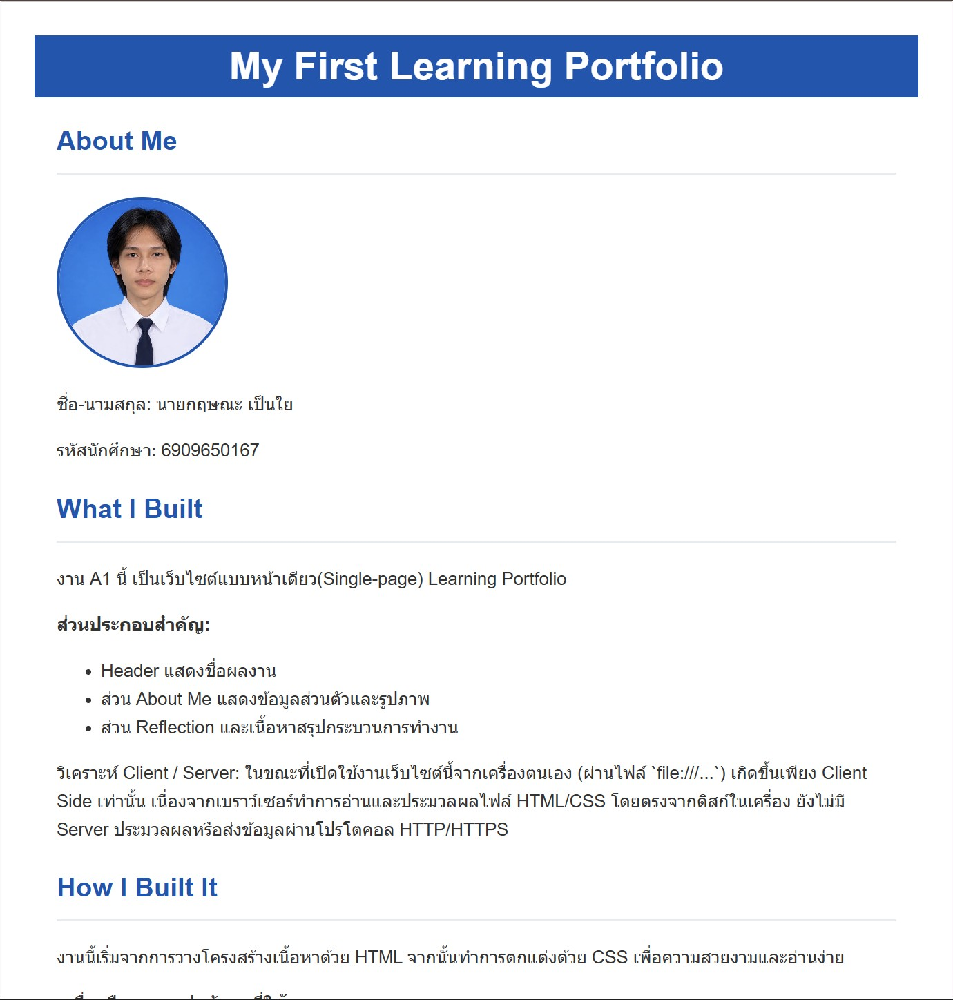
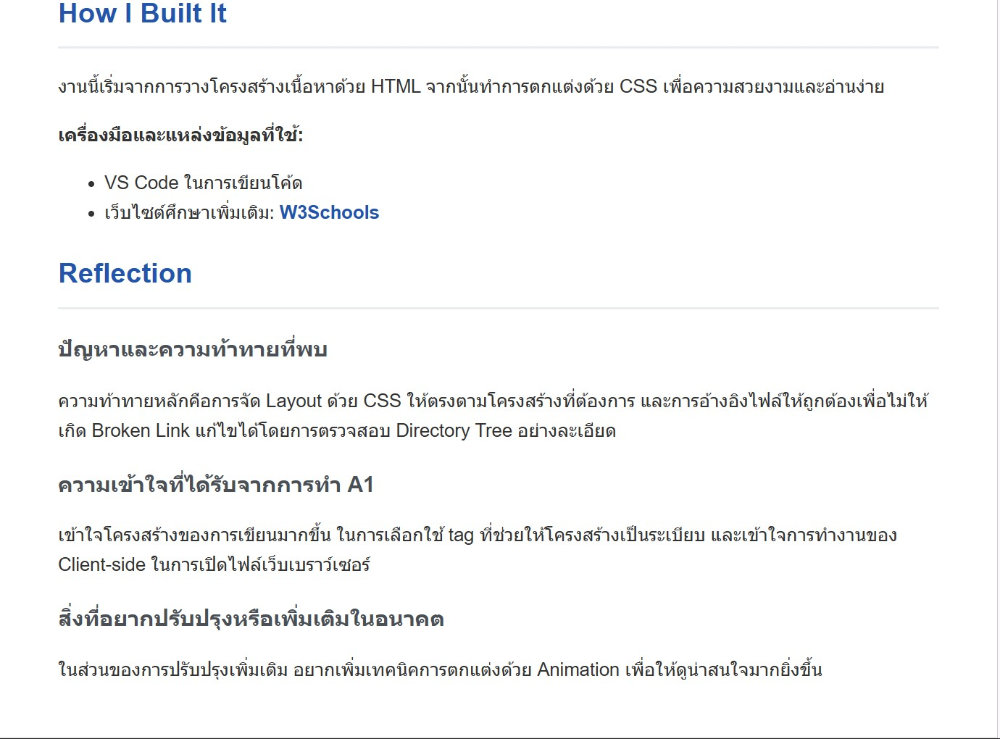

ปัญหาและความท้าทายที่พบ
ความท้าทายหลักคือการจัด Layout ด้วย CSS ให้ตรงตามโครงสร้างที่ต้องการ และการอ้างอิงไฟล์ให้ถูกต้องเพื่อไม่ให้เกิด Broken Link แก้ไขได้โดยการตรวจสอบ Directory Tree อย่างละเอียด
ชื่อ-นามสกุล: นายกฤษณะ เป็นใย
รหัสนักศึกษา: 6909650167
สาขาวิชา: วิทยาการคอมพิวเตอร์
มหาวิทยาลัย: มหาวิทยาลัยธรรมศาสตร์
ข้อมูลติดต่อ: kritsana.pen@dome.tu.ac.th
งาน A1 นี้ เป็นเว็บไซต์แบบหน้าเดียว(Single-page) Learning Portfolio
ส่วนประกอบสำคัญ:
วิเคราะห์ Client / Server: ในขณะที่เปิดใช้งานเว็บไซต์นี้จากเครื่องตนเอง (ผ่านไฟล์ `file:///...`) เกิดขึ้นเพียง Client Side เท่านั้น เนื่องจากเบราว์เซอร์ทำการอ่านและประมวลผลไฟล์ HTML/CSS โดยตรงจากดิสก์ในเครื่อง ยังไม่มี Server ประมวลผลหรือส่งข้อมูลผ่านโปรโตคอล HTTP/HTTPS
งานนี้เริ่มจากการวางโครงสร้างเนื้อหาด้วย HTML จากนั้นทำการตกแต่งด้วย CSS เพื่อความสวยงามและอ่านง่าย
เครื่องมือและแหล่งข้อมูลที่ใช้:
ความท้าทายหลักคือการจัด Layout ด้วย CSS ให้ตรงตามโครงสร้างที่ต้องการ และการอ้างอิงไฟล์ให้ถูกต้องเพื่อไม่ให้เกิด Broken Link แก้ไขได้โดยการตรวจสอบ Directory Tree อย่างละเอียด
เข้าใจโครงสร้างของการเขียนมากขึ้น ในการเลือกใช้ tag ที่ช่วยให้โครงสร้างเป็นระเบียบ และเข้าใจการทำงานของ Client-side ในการเปิดไฟล์เว็บเบราว์เซอร์
ในส่วนของการปรับปรุงเพิ่มเติม อยากเพิ่มเทคนิคการตกแต่งด้วย Animation เพื่อให้ดูน่าสนใจมากยิ่งขึ้น
Title: CS100 A1:My First Learning Portfolio
Type: Course Assignment
Date: 30 Aug 2026
Role: Individual Developer
Description: พัฒนาเว็บไซต์Learning Portfolio หน้าเดียวด้วย HTML และ CSS
Skills: HTML, CSS, Semantic HTML
Reflection: ตอนที่ได้ทำ Assignment: My First Learning Portfolio ได้ฝึกสร้างเว็บโดยใช้ HTML และ CSS จึงได้เข้าใจที่ทั้งสองส่วนทำงานร่วมกันยังไง ตอนแรกมีปัญหาเรื่อง semantic HTML และ path ของรูป แต่พอลองแก้ทีละจุดก็เข้าใจมากขึ้นถ้าพัฒนาต่อ อยากปรับหน้าเว็บให้ดูดีและใช้งานบนมือถือได้ดีขึ้น
Evidence: รูปของผลงานชิ้นนี้


Title: ScB TechX Campus Tour @ TU
Type: Activity
Date: 12 Oct 2026
Role: Participant
Description: พบกับวิทยากรจาก SCB TechX ที่มีประสบการณ์ทำงานจริงด้าน AI และ Data
Skills: Communication, Collaboration, Connection
Reflection: รอเข้าร่วมกิจกรรม SCB TechX Campus Tour เพื่อเรียนรู้เกี่ยวกับการนำ AI และ Data ไปประยุกต์ใช้ในงานจริง โดยคาดว่าจะได้เรียนรู้ว่า AI Agent ต้องอาศัยข้อมูลที่มีคุณภาพและความเข้าใจในบริบทต่าง ๆ ความท้าทายคือการทำความเข้าใจการทำงานของ Semantic Models จึงจะตั้งใจรับฟังคำอธิบายจากวิทยากร และในอนาคตอยากศึกษาเพิ่มเติมเกี่ยวกับ AI Agent และการจัดการข้อมูล พร้อมฝึกสร้างโปรเจกต์เพื่อนำความรู้ไปใช้จริง
Evidence: รูปลายละเอียดของการเชิญชวน